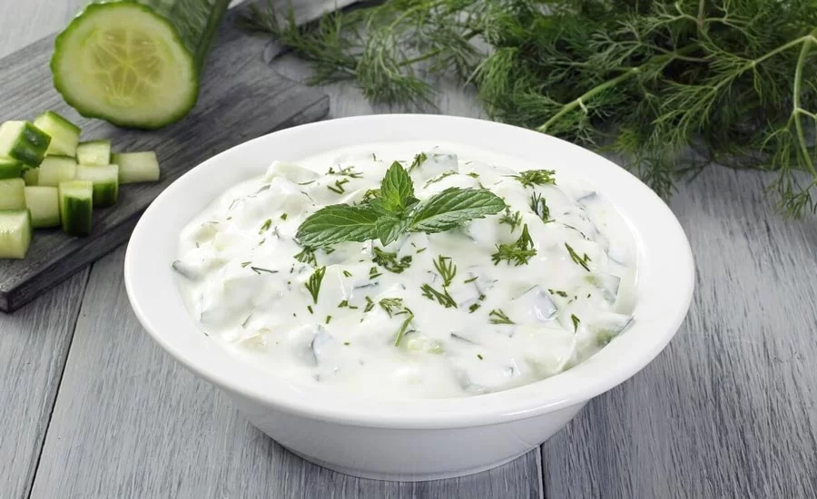

Masht-o Khiyaar (Persian Cucumber Salad with Sultanas and Walnuts)

This is a Persian recipe and my favorite cucumber salad.
Cucumbers are combined with toasted walnuts and sultanas
and a light dressing of yogurt, fresh dill, and fresh mint.
For best results refrigerate salad for about 1 hour.
Ingredients
- 1 ½ cups plain yogurt
- 2 tablespoons roughly chopped walnuts
- 3 tablespoons golden raisins (sultanas), roughly chopped
- 1 tablespoon chopped fresh dill
- 1 tablespoon chopped fresh mint
- salt and freshly ground black pepper to taste
- 1 large cucumber - peeled, seeded, and diced
Directions
-
Place yogurt into a fine-mesh sieve lined with a
coffee filter and allow to drain, about 20 minutes.
You should end up with about a cup of thick yogurt.
-
Heat a small skillet over medium heat, add walnuts,
and toast while stirring until nuts start to turn
golden brown and become fragrant, 3 to 5 minutes. Allow to cool.
-
Mix yogurt, sultanas, walnuts, dill, mint,
salt, and pepper in a large bowl, add cucumber and toss to combine.
Refrigerate for 1 hour.
Back to top
Back to home page